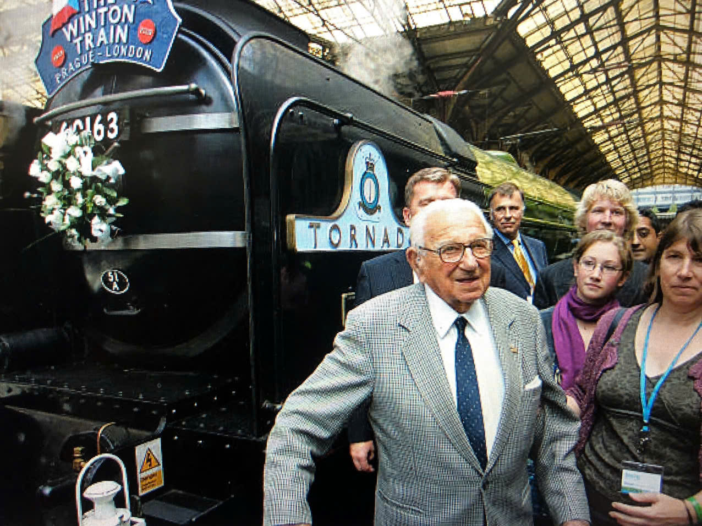
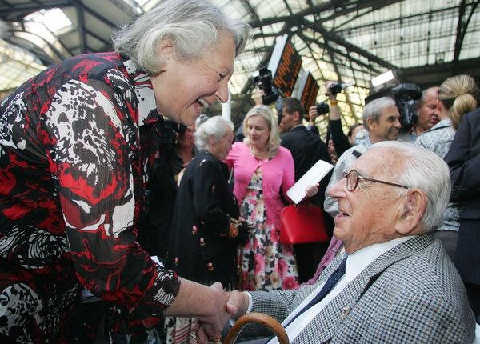
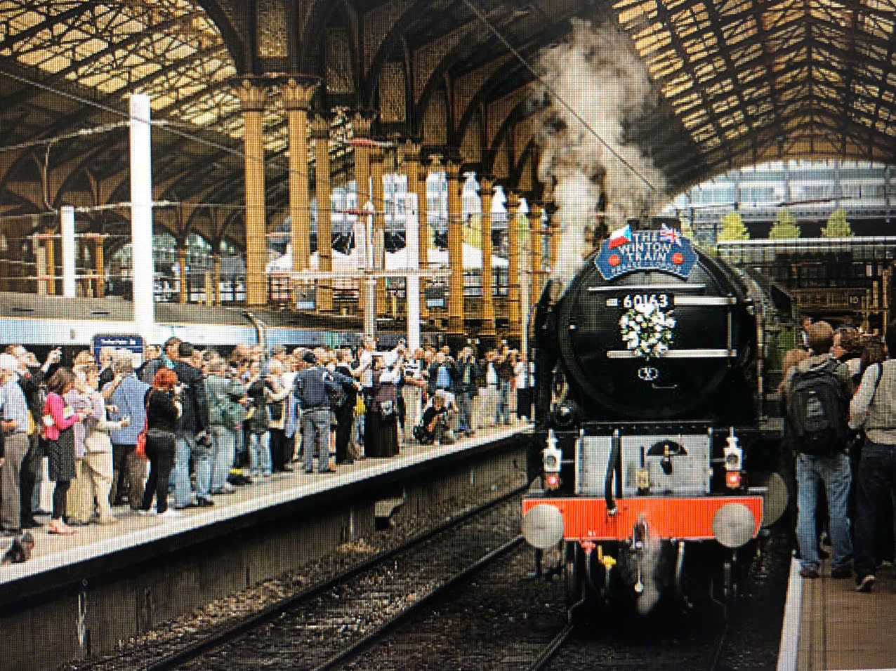

Dòng thời gian cuộc đời Sir Nicholas Winton
Nicholas George Wertheim sinh ra tại West Hampstead, London, trong một gia đình gốc Do Thái đã cải đạo sang Kitô giáo.
Ý nghĩa: Khởi đầu cuộc đời của một con người sẽ thay đổi số phận của hàng nghìn người khác.
Winton hủy chuyến đi trượt tuyết để đến Tiệp Khắc theo lời mời của người bạn Martin Blake. Tại đây, ông tận mắt chứng kiến các trại tị nạn đầy trẻ em Do Thái đang đối mặt với hiểm họa từ Đức Quốc xã.
Ý nghĩa: Đây là bước ngoặt quan trọng nhất — khoảnh khắc Winton quyết định hành động thay vì chỉ quan sát.
Winton một mình lập văn phòng tại phòng khách khách sạn ở Praha, vận động chính phủ Anh cấp visa, tự tìm gia đình nhận nuôi và thu tiền thế chân 50 bảng Anh cho mỗi trẻ. Ông tổ chức 8 chuyến tàu đưa 669 trẻ em thoát khỏi Tiệp Khắc.

Ý nghĩa: Hành động vĩ đại nhất trong cuộc đời ông — cứu sống 669 sinh mạng vô tội.
Chuyến tàu thứ 9 dự kiến chở 250 trẻ em đã bị chặn lại do Đức Quốc xã xâm chiếm Ba Lan — Thế chiến thứ hai bùng nổ. Đây là nỗi day dứt lớn nhất trong cuộc đời Winton.
Ý nghĩa: Cho thấy chiến tranh đã cướp đi cơ hội cứu sống thêm nhiều sinh mạng.
Vợ ông là Grete tình cờ tìm thấy cuốn sổ tay cũ ghi danh sách 669 trẻ em trên gác mái. Câu chuyện được chương trình That's Life! của BBC phát sóng, gây chấn động toàn cầu.

Ý nghĩa: Khoảnh khắc đoàn tụ xúc động — khi hàng chục người trong khán phòng đứng dậy, chính là những đứa trẻ ông từng cứu.
Nữ hoàng Elizabeth II phong tặng ông danh hiệu Hiệp sĩ (Sir Nicholas Winton) vì những đóng góp nhân đạo vĩ đại.
Ý nghĩa: Sự ghi nhận chính thức từ Hoàng gia Anh cho những đóng góp thầm lặng của ông.
Đoàn tàu "The Winton Train" do đầu máy hơi nước Tornado kéo, mô phỏng lại hành trình Praha → London, kỷ niệm 70 năm chuyến tàu giải cứu đầu tiên. Winton đích thân tham dự sự kiện.

Ý nghĩa: Di sản của ông được tưởng nhớ và tôn vinh bởi thế hệ sau.
Sir Nicholas Winton qua đời tại bệnh viện Wexham Park, Slough, Anh, hưởng thọ 106 tuổi. Ông ra đi trong sự tiếc thương của hàng triệu người trên thế giới.
Ý nghĩa: Khép lại cuộc đời của một người hùng thầm lặng, nhưng di sản của ông còn mãi với thời gian.
Theo nhóm chúng tôi, bước ngoặt quan trọng nhất trong cuộc đời Winton là chuyến đi đến Praha tháng 12/1938. Nếu ông không hủy chuyến trượt tuyết và đến Tiệp Khắc, ông đã không chứng kiến nỗi khổ của những đứa trẻ tị nạn — và 669 em nhỏ có thể đã không được cứu.